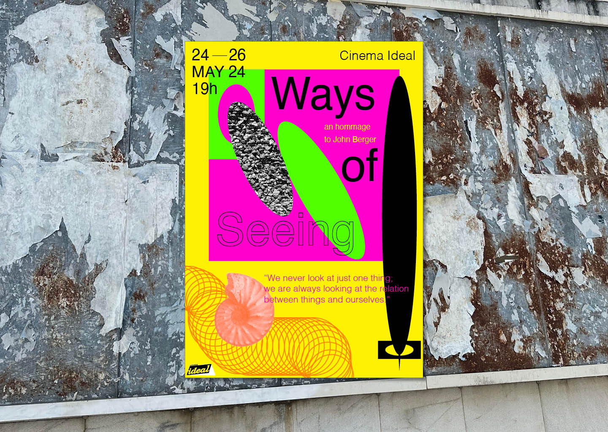
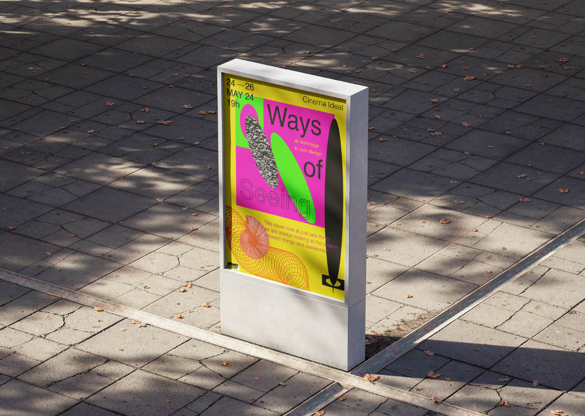
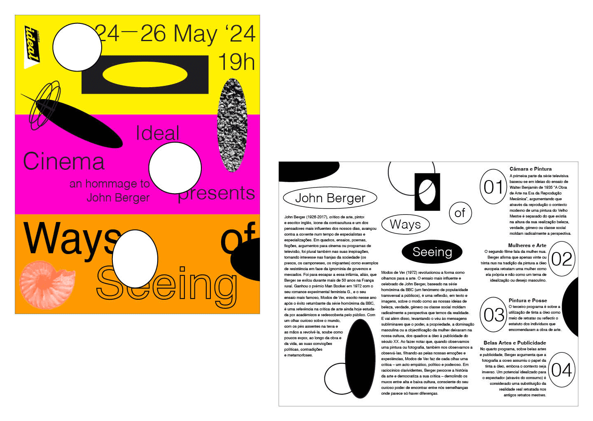
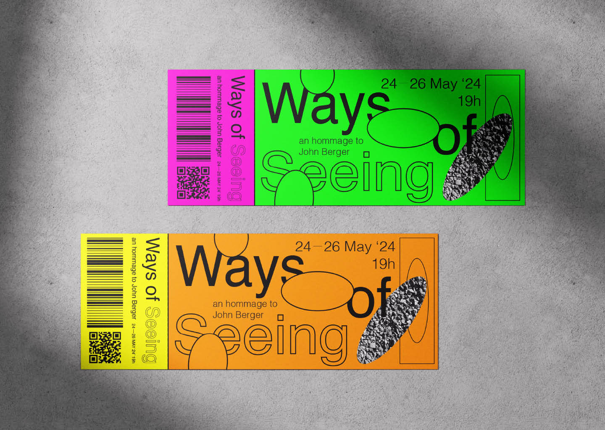

Ways of Seeing
2024
John Berger's iconic Ways of Seeing delves deep into symbols, the meaning we attribute to them, the influences of art history in the images we create, amongst other things. Basing my identity for this project off of the idea of the meaning we give to objects and things, I made a poster, some tickets, and a programme for a ficticious event that would be hosted at Cinema Ideal where his four episodes in Ways of Seeing would be aired.
Academic Project, Poster Design, Editorial Design



